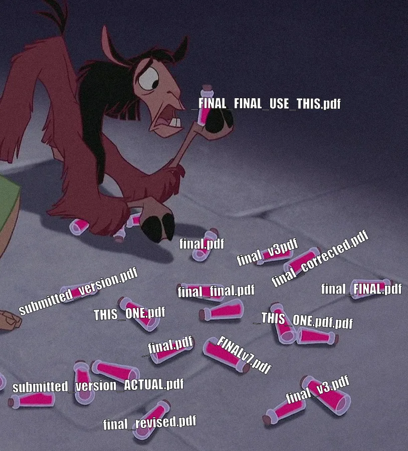

Compilation
Open a source file and Press runs the compiler, stores the result in its cache, and updates the view after each save. It does not add generated files to your project.
Before
The usual setup needs a compiler process and a generated PDF between the editor and viewer.
With Press
Press watches the source, compiles it, and displays the result from its own cache.
Press rebuilds and updates the page in place, with your scroll position intact. You do not need a separate watcher or reload command.
Press watches files rather than editors, so Vim, VS Code, and Emacs need no integration.
Install press.nvim if you want
a :Press command in Neovim.
Version history
Press stores titled snapshots of the source in its own data directory. Your project folder stays unchanged.
Name the current source state, then open it later in the same viewer. Press compiles the snapshot when needed.
⌘click a page to see the source file, line number, and text for that spot.
This also works when the snapshot's source is no longer on disk.
Press has no branches, merges, or remotes. It stores a flat list of snapshots and deduplicates shared files, such as figures used by several versions.
Build and install Press from source:
git clone https://github.com/antonio-leitao/printing-press cd printing-press npm install npm run install:app
That puts Press.app in /Applications. Run it again to upgrade.
Add -- --link once for a press command in your terminal.
Requires macOS, Node.js, Rust, and a TeX distribution with latexmk. Markdown
documents also require pandoc.